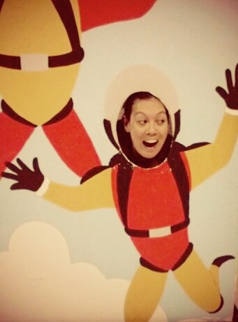

About Me
I am...well, many things. I have pretty varied interests that span private aviation, sustainability, climate science, micro-finance, and outdoor pursuits. I also am passionate about foreign languages and learning about other cultures. I am an avid traveler, particularly a fan of an adventure-travel or solo-travel travel focus. I have traveled to 50 countries on 6 continents. I make sure to try the ice cream wherever I go. The short-list of top-marks belong to mom-and-pop places in Bologna, Italy; Ushuaia, Argentina; and a place slightly hidden by overgrown ivy near Kew Gardens just outside London.
I enjoy several outdoor pursuits including hiking, rock climbing, rowing, and pretty much anything you can do snow-related. Winter is by far my favorite season. Snow is the best! As such: skiing is high on my list of favorite things to do. I like alpine skiing, telemark, and cross-country skiing (I much prefer skate skiing to classic). I mostly backcountry ski these days, I switch off with the alpine touring and telemark setup(s). One of my favorite things to do in the winter in Colorado is go on ski trips up to backcountry huts. 10th mountain division, and the San Juan hut system have some fantastic huts to skin up/snowshoe to (in the winter) or hike to (in the summer). I prefer hiking 13ers to 14ers as they are less crowded and provide more of a wilderness experience. However, winter ascents up 14ers can be particularly rewarding.
I really like animals. When I was 8 years old I woke to some meowing outside, and I traced it to a small opening in a cement wall behind the garden. I found some tools and took to chiseling away the opening until it was large enough to reach my hand in and scoop out this small, scared kitten. This was in Thailand, and a family-friend took in the kitten (yes, the kitten grew up and lived a long and happy life). If I had to choose a category of animals...I'd say that 'woodland creatures' tops the list. Goats too. I have a short, but growing, list of animal sanctuaries on my future travel list.
On a more professional level: I am looking to contribute to fast-paced and challenging teams working on real problems in the world. I want to combine my interests in travel, social innovation, and technology to contribute in a meaningful way. The tech industry is large, and spans various industries. I would like to see more women in tech, and I think it is important that I "pay it forward" with helping others that are not traditionally in tech careers to consider pursuing coding and STEM-related careers. Long-term: I would like to create apps that provide solutions to social-issues, and I would like to be an entrepreneur.